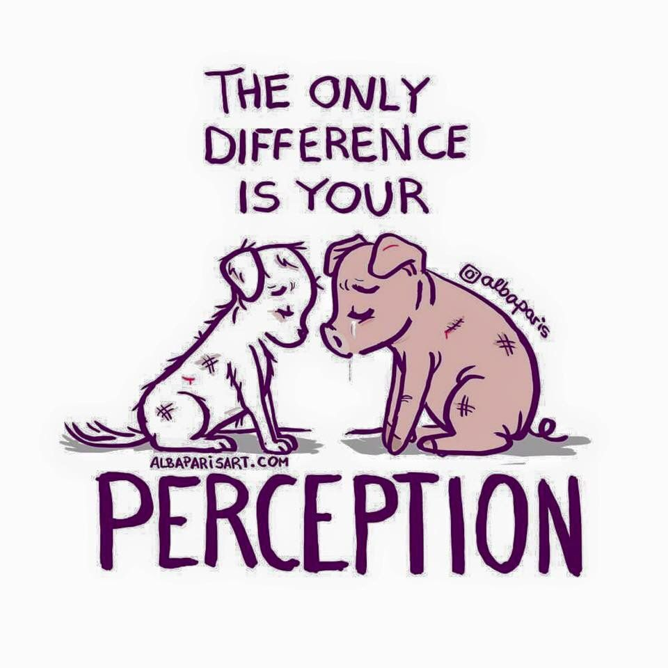

Inicio
Guia
Contacto
Sucursales
Registro
Maltrato Animal
Guia de iniciacion al veganismo

Consejos
Visitá tu dietética más cercana para consultar la variedad de productos veganos.
Abastecete de lo básico. Asegurate de tener porotos, legumbres, semillas, tofu, verduras, frutas, cereales como avena, nueces, almendras para hacer leche, pan y mermeladas.
Visitá sitios donde publiquen recetas veganas y marcá aquellas que te gustaría probar.
Preparar un plan de comidas.
¡Mantené la mente abierta! No todas las versiones veganas tendrán exactamente el mismo sabor que las versiones no-veganas porque no son lo mismo.
Si probás un tipo de leche vegetal y no te gusta, ¡no des por hecho que te disgustan todas las leches vegetales!
Si estás buscando un producto, ingrediente o receta en particular y no sabés por dónde empezar, comenzá por internet.
Sé amable con vos mismo. Es raro que alguien realice el cambio a una dieta basada en plantas sin cometer un error en algún momento.